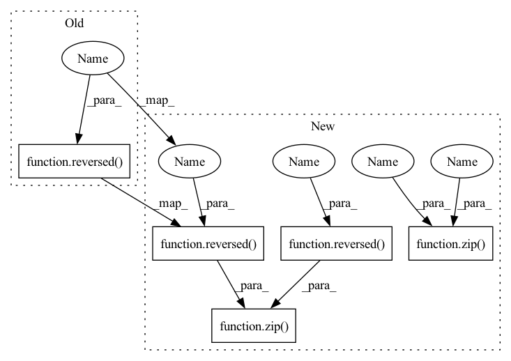

Pattern ID :1760

Before Change
dropout = vit_dropout
)
for ind, (dim_in, dim_out) in enumerate(reversed(in_out)):
is_last = ind == (len(in_out) - 1)
self.ups.append(nn.ModuleList([
After Change
self.ups = nn.ModuleList([])
num_resolutions = len(in_out)
for ind, ((dim_in, dim_out), factor) in enumerate(zip(in_out, downsample_factor)):
is_last = ind >= (num_resolutions - 1)
self.downs.append(nn.ModuleList([
resnet_block(dim_in, dim_in, time_emb_dim = time_dim),
resnet_block(dim_in, dim_in, time_emb_dim = time_dim),
LinearAttention(dim_in),
Downsample(dim_in, dim_out, factor = factor)
]))
mid_dim = dims[-1]
self.vit = Transformer(
dim = mid_dim,
time_cond_dim = time_dim,
depth = vit_depth,
dim_head = attn_dim_head,
heads = attn_heads,
ff_mult = ff_mult,
dropout = vit_dropout
)
for ind, ((dim_in, dim_out), factor) in enumerate(zip(reversed(in_out), reversed(downsample_factor))):
is_last = ind == (len(in_out) - 1)
self.ups.append(nn.ModuleList([
In pattern: SUPERPATTERN
Frequency: 3
Non-data size: 5
Instances
Fragment ID: 4398691
Project Name: lucidrains/denoising-diffusion-pytorch
Commit Name: 54557120880bb9adbea9f93a29a2c432b67991c1
Time: 2023-02-01
Author: lucidrains@gmail.com
File Name: denoising_diffusion_pytorch/simple_diffusion.py
M Class Name: UViT
N Class Name: UViT
M Method Name: __init__(17)
N Method Name: __init__(17)
M Parent Class: nn.Module
N Parent Class: nn.Module
M File Name: denoising_diffusion_pytorch/simple_diffusion.py
N File Name: denoising_diffusion_pytorch/simple_diffusion.py
M Start Line: 295
M End Line: 383
N Start Line: 309
N End Line: 409
Fragment ID: 4398690
Project Name: lucidrains/x-unet
Commit Name: b3baf3ac77328c1fea7bce83524cbfd3c17cc9f6
Time: 2022-07-25
Author: lucidrains@gmail.com
File Name: x_unet/x_unet.py
M Class Name: XUnet
N Class Name: XUnet
M Method Name: __init__(11)
N Method Name: __init__(9)
M Parent Class: nn.Module
N Parent Class: nn.Module
M File Name: x_unet/x_unet.py
N File Name: x_unet/x_unet.py
M Start Line: 201
M End Line: 232
N Start Line: 216
N End Line: 265
Fragment ID: 4398692
Project Name: lucidrains/med-seg-diff-pytorch
Commit Name: efbb6cd8fb9e012d242a872f4862f3e95929709f
Time: 2022-11-30
Author: lucidrains@gmail.com
File Name: med_seg_diff_pytorch/med_seg_diff_pytorch.py
M Class Name: Unet
N Class Name: Unet
M Method Name: __init__(12)
N Method Name: __init__(11)
M Parent Class: nn.Module
N Parent Class: nn.Module
M File Name: med_seg_diff_pytorch/med_seg_diff_pytorch.py
N File Name: med_seg_diff_pytorch/med_seg_diff_pytorch.py
M Start Line: 234
M End Line: 317
N Start Line: 237
N End Line: 326